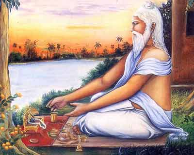
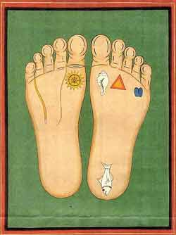

Sri Advaita Acarya's Appearance Anniversary
“In the age of Kali, intelligent people perform congregational chanting to worship the incarnation of Godhead, who constantly sings the names of Krsna. Although His complexion is not blackish, He is Krishna Himself. He is accompanied by His associates, servants, weapons, and confidential companions.”

This verse from the Vaisnava scripture Srimad-Bhagavatam predicts the arrival of Sri Caitanya, from the spiritual realm, with His close companions. His mission: to introduce the chanting of Krishna’s sacred names as the easiest and most potent method of self-realisation; a special “remedy” for this difficult age.
Advaita Acarya was one of the close companions who helped Lord Caitanya spread His message “to every town and village”. In fact, he plays a particularly important role in bringing this about.
Advaita Acarya was born in Bengal in 1434, fifty years before the advent of Sri Caitanya. He spent most of his adult life in the town of Shantipur, with his wife and family, and became the well-respected leader of the brahmana community there. At Shantipur, he taught the philosophy of Bhagavad-gita and Srimad-Bhagavatam, and encouraged everyone to follow the path of bhakti – loving service to Sri Krishna.
As time went by, however, Advaita Acarya became increasingly saddened as he saw the growing tendency for people to abandon their spiritual practices, for materialistic goals – the pursuit of wealth and the medieval equivalents of sex, drugs, and rock and roll.. He saw clearly that this would lead to a dysfunctional society of unhappy individuals, and after due thought, concluded that the only solution was to beg the Supreme Lord to come Himself and attract people back to the joyfulness of spiritual life.
Advaita Acarya prayed fervently to the Lord for several months – it is said that he cried out very loudly and worshipped the Lord with sacred tulasi leaves and Ganges water. At the end of thirteen months, at an eclipse of the full moon, the Acarya’s prayers were answered: Sri Caitanya advented in the district of Mayapur, as the son of Mother Sachi.
Many of Advaita Acarya’s activities are described in scriptures such as Sri Caitanya-caritamrta and Sri Caitanya-bhagavata. On his feast day, Gaudiya Vaisnavas enjoy reading and discussing these pastimes, and remember Advaita Acarya with gratitude, for taking such compassion on the people of Kali-yuga.
Dates
This year Advaita Acarya's appearance anniversary occurs on 4 February in most parts of the world, with the exception of New Zealand (5 February). Check your local centre for the correct timings for your area, or download a Vaisnava calendar here.